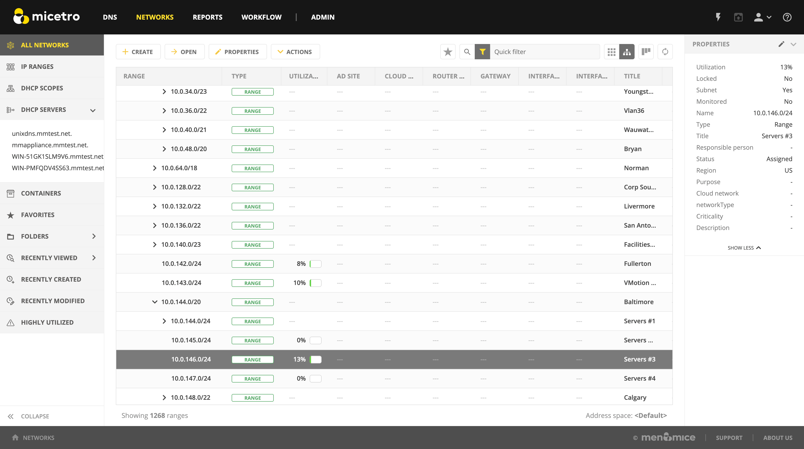
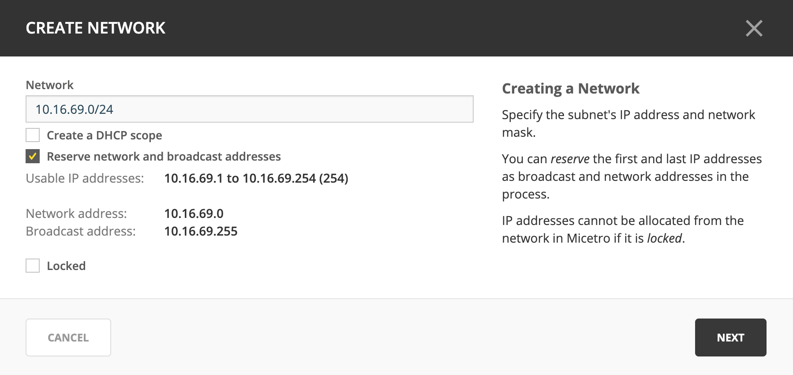
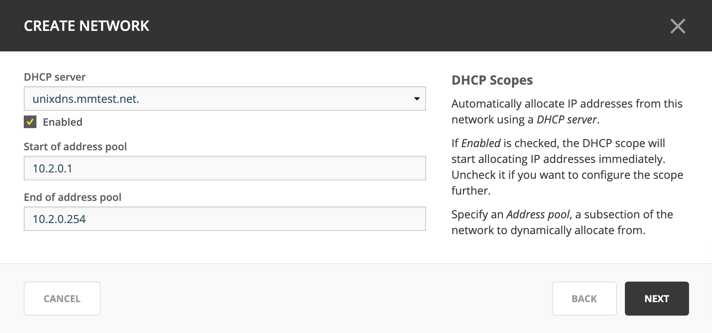
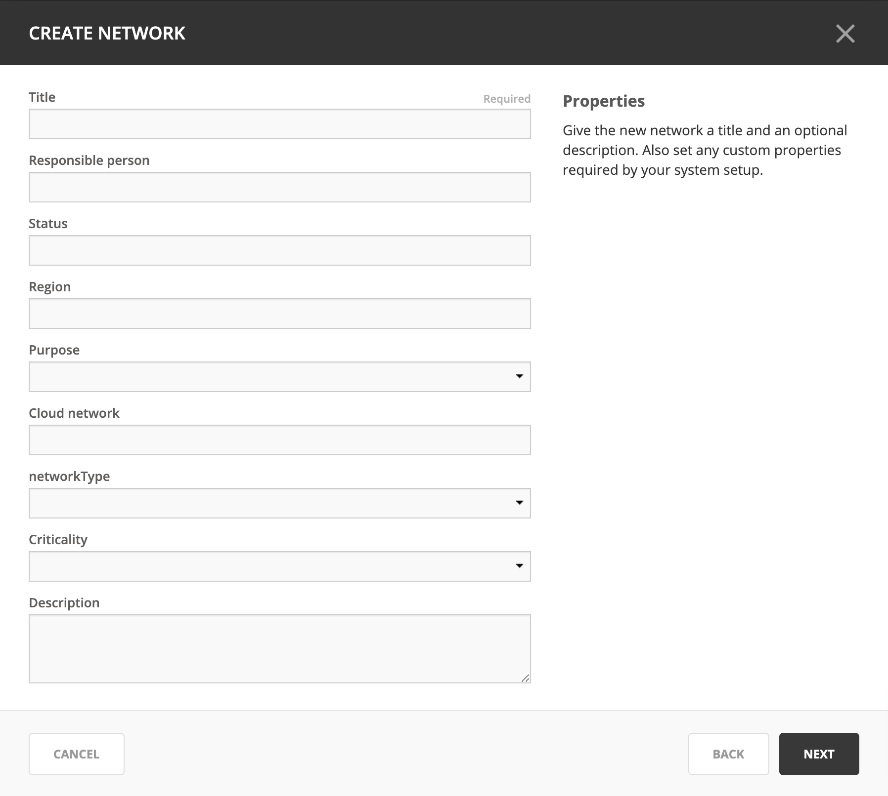
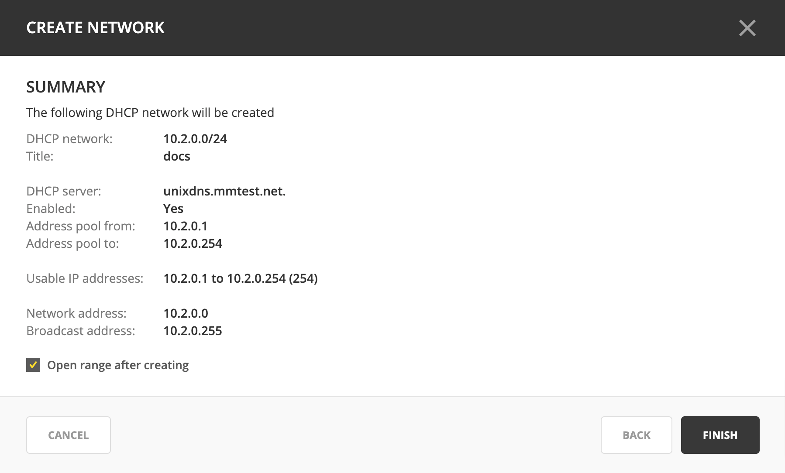
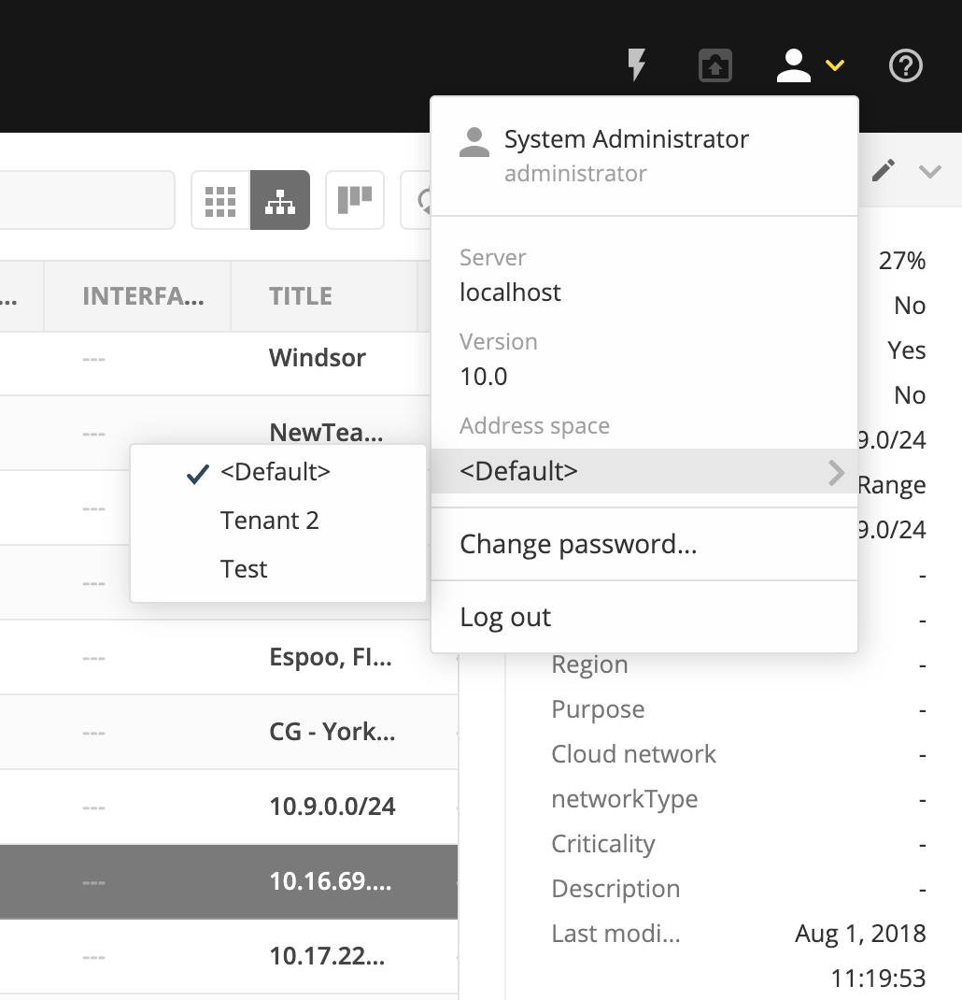
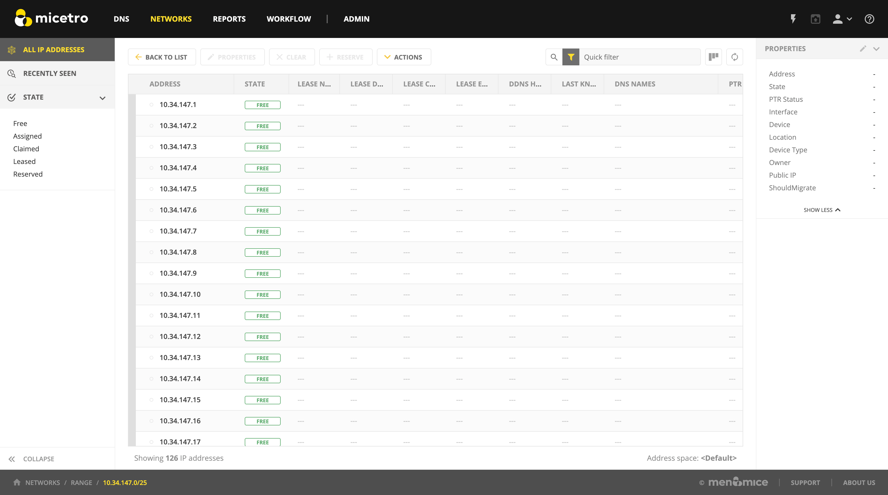
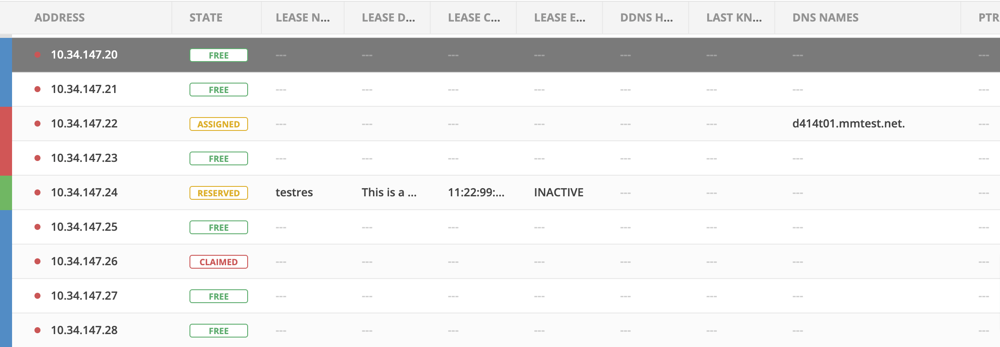

Network management
Networks
{kind=link}
Viewing the network list
In the Networks section of the Web Application, users are presented with a list of all networks in the system that they have access to view.
The networks lists shows all IP address ranges and scopes in the system (depending on what is selected in the Filtering sidebar). The visible columns can be configured by clicking on the “Configure columns” icon above the list.
The utilization of ranges and DHCP scopes is shown in a column called Utilization showing each network’s utilization.
Creating a network
Step 1
Click on the Create button above the list, or click on on the top or in the Inspector.
A wizard dialog appears to guide users through the process.
{kind=link}
Fill in the network along with the subnet mask.
When creating a DHCP network, the check box Create a DHCP network should be checked. (See below for details.)
Specify if network and broadcast addresses should be reserved.
Click Next.
Step 2 (optional)
If the Create a DHCP network box was checked in Step 1, the following dialog is presented:
{kind=link}
Step 3
{kind=link}
Fill in the Title and Description.
Fill in to any custom fields to be defined in the system.
Click Next.
Step 4
Users are presented with summary information about the network before it is created.
{kind=link}
To open the range after it has been created, check the Open range after creating box.
Optionally, add a save comment for audit trail purposes.
Click Finish.
The new IP address range or DHCP scope will be created.
Additional actions
After selecting a network in the list, the available actions are shown in the Inspector on the right.
Action |
Description |
|---|---|
Create network |
See Creating a network. |
Open network |
Opens up the network and lists all IP addresses. |
Edit network properties |
Displays a dialog where the properties of the network can be configured. |
Edit DHCP options |
Only for DHCP scopes. See Edit DHCP Options. Displays a dialog where DHCP scope options can be added and edited. |
Delete network |
Allows the network to be deleted from the system. |
Enable / disable scope |
Only for DHCP scopes. A disabled DHCP scope will be indicated in the list in the Authority column, such as ‘Disabled on <Server name>’. Scopes on Cisco DHCP servers can not be disabled. |
Set folder |
Allows for moving the object to a different folder, adding the object to a folder or removing from a folder. |
Find next free IP address |
Opens the network and selects the next free IP address. |
Set discovery schedule |
Enable and set discovery schedule for a network. |
Convert to container |
Allows for converting a DHCP scope or IP address range to a container. |
Convert to DHCP scope |
Only for IP address ranges. |
Convert to network |
Only for DHCP scopes. |
Set subnet monitoring |
Allows for enabling and configuring subnet monitoring. |
View history |
Opens a dialog which shows the history for the selected network. |
Import |
Opens an import wizard where networks can be imported. See Import IPAM data. |
Enabling / Disabling DHCP scopes
To disable a DHCP scope, select the scope in the list and use .
To enable a DHCP scope, select the scope in the list and use .
Edit DHCP options for a scope
See Edit DHCP Options.
DHCP information
After selecting a DHCP scope in the list, information on DHCP pools can be viewed in the inspector on the right.
The name of the authoritative DHCP servers are shown along with pools and exclusions defined in the scope.
In the case of split and failover DHCP scopes, both authoritative servers are shown and the respective pools and exclusions.
Changing between address spaces
If there are more than one address space defined, it is possible to change between address spaces by going to and select a different address space to activate.
{kind=link}
IP Addresses
Viewing a network
To open a network, double click on a network or select the network and click on Open.
An example of a network which is an IP address range can be seen below.
Note
Each IP address in a network can have different states. It depends on whether it is an IP address network or a DHCP scope.
{kind=link}
Column descriptions
IP Address Ranges
Column |
Description |
|---|---|
Address |
An IP address within the IP address range. |
State |
For IP address ranges, the possible states for IP addresses are:
|
Last known MAC Address |
The last known MAC address associated with the IP address. (Obtained through discovery.) |
DNS names |
A list of DNS hostnames associated with the IP address. |
PTR status |
Shows the status of the Address (A) record and Pointer (PTR) record mappings. This column can have three values: Empty. There are no DNS records for the host. It is also empty if a PTR record exists where the domain in the data section of the PTR record is not managed by the system. OK. There is a match between the A and the corresponding PTR record(s). Verify. There is no match between the A and the PTR records for the host. The most common reasons are:
|
Last seen |
The date and time which the IP address was last seen during discovery. |
Device |
If the IP address is associated with a device, the name of the device is shown. |
DHCP Scopes
Note
The table below shows only additional columns shown for DHCP scopes. Shared columns are described in the table above.
Column |
Description |
|---|---|
Pool color indicator |
|
State |
For DHCP scopes, the possible states for IP addresses are
|
Lease name |
The name of the DHCP lease |
Lease description |
The description of the DHCP lease |
Lease client identifier |
The client identifier of the DHCP lease |
Lease expires |
The expiration time of the DHCP lease |
DDNS hostname |
The DDNS hostname associated with the DHCP lease |
An example of a network which is a DHCP scope:
{kind=link}
Creating a DHCP reservation
Note
DHCPv4 and DHCPv6 scopes inherit DHCP and DDNS Options from the parent DHCP server. DHCPv4 and DHCPv6 reservation inherit DHCP and DDNS options from the DHCP scope. However these options may be changed by editing the options for the specific scope or reservation.
Inside a DHCP scope, select a specific IP address in the list, and then click on the “Reserve” button above the list.
Creating a DHCPv6 reservation
New identifier information is required for DHCPv6 reservations and these are:
- Unique Identifier (DUID)
The globally unique identifier of the client system
- Identity Association Identifier (IAID)
The indentifier of the interface on the client system
To create a DHCP reservation:
Under :guilable:`IPAM` >> DHCP Scopes double-click on a Scope and click on Reserve
Depending on whether an address was already selected from the grid before pressing Reserve choose from the following options:
- Selected
The address which was selected prior to clicking on Reserve
- Automatic
A randomly selected IP address in that scope chosen by Micetro
- Manual entry
An IP address entered manually by the user
{kind=link}
{kind=link}
Input the following information:
Name
Unique identifier (DUID)
Identity association identifier (IAID)
Description
Click Save
Editing DHCPv6 Options for Reservations
For more information on configuring DHCPv6 options go to [DHCP Options](https://menandmice.com/docs/10.2/guides/user-manual/webapp_edit_dhcp)
Go to IPAM >> DHCP Scopes and double-click on a scope
Select a reservation and click on the ellipsis (or meatball) menu
Select Edit Reservation Options
Adding a DNS host
To add a DNS host for a specific IP address within a IP address range or a scope:
Select the IP address in the list
In the Related DNS data section of the Inspector, click on the + button
A dialog will be displayed which allows for adding the record
{kind=link}
Specify a record name.
Specify a zone name. (Typing in the zone name field will start generating a list of potential zone names with autocomplete.)
Fill in other information.
Click Create to create the new record.
Additional actions
After selecting an IP address in the list, the available actions are shown in the Inspector on the right.
Action |
Description |
|---|---|
Edit IP address properties |
Displays a dialog where the properties of the IP address can be configured. |
Find next free IP address |
Selects the next free IP address. |
Create new DNS record |
Displays a dialog where DNS records associated with the IP address can be created. |
Claim IP address |
Claims the IP address. |
Ping IP address |
Pings the IP address. See Pinging an IP address. |
View history |
Opens a dialog which shows the history for the selected IP address. |
Import IP |
Opens an import wizard where networks can be imported. |
Pinging an IP address
An IP address or multiple IP addresses in the list can be pinged by selecting them and then clicking on the Ping IP address task in the Inspector.
An indicator is shown during the ping. Afterwards a green or red indicator on the left of the IP address indicates a successful (green) or unsuccessful (red) ping.
{kind=link}